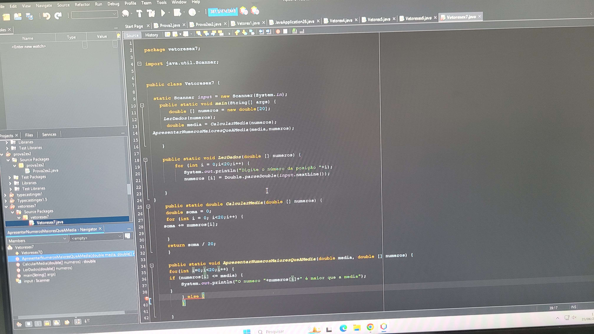
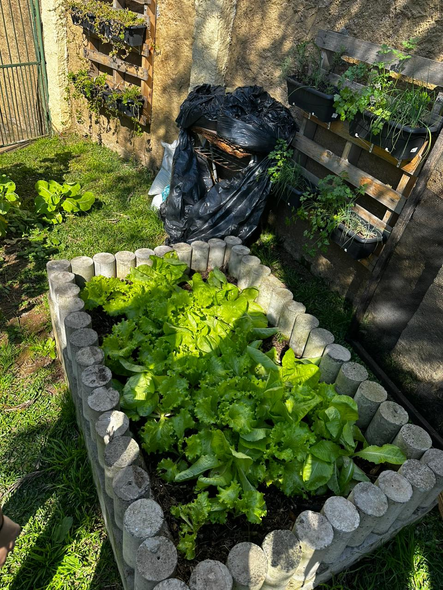
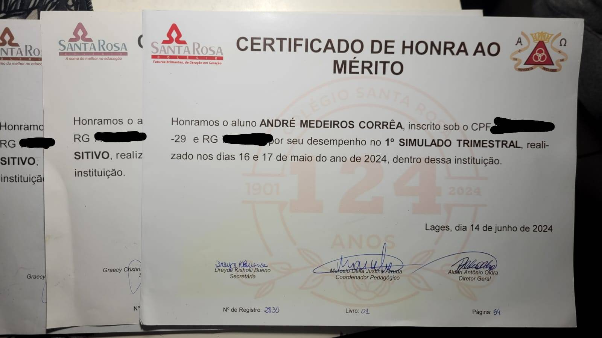
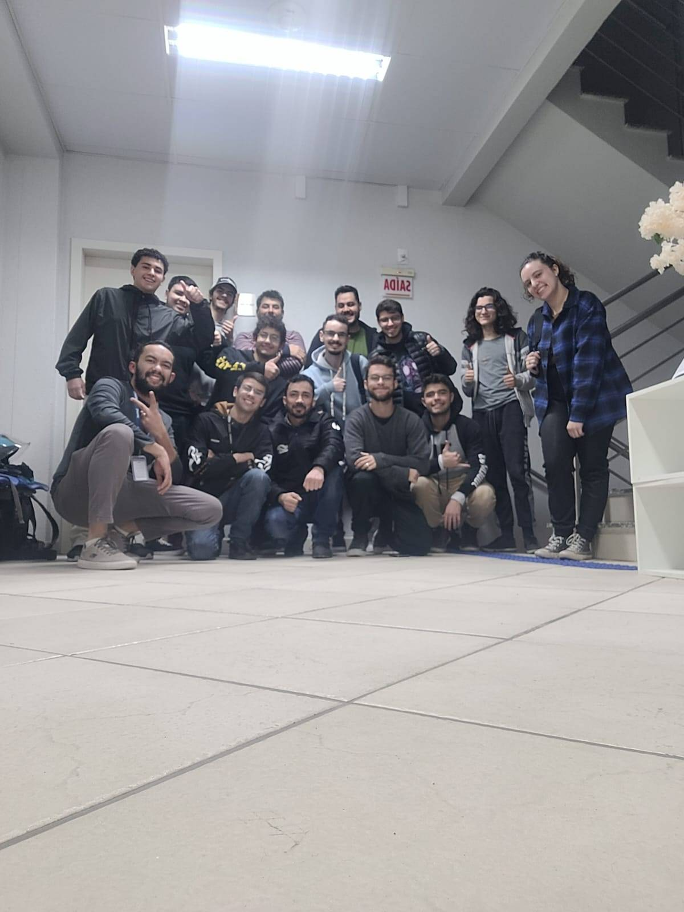

<div class="container-fluid">
    <div class="row">
        <div class="card shadow-sm">
            <div class="card-body">
                <div class="row">

                    <div class="col-12 col-md-6">
                        <h2 class="card-title text-black">Currículo</h2>
                        <p>
                        <h5 class="text-black">Experiências</h5>
                        Eu me formei no Colégio Santa Rosa em 2024, com excelentes notas acadêmicas, fiz atividades
                        voluntárias no ensino médio para o meio ambiente com um total de 80 horas de carga horária, fiz
                        cursos de inglês, HTML e CSS de 20 horas cada e no decorrer desse trajeto consegui vários
                        certificados de parabenização acadêmica. <br>
                        Comecei agora a estudar no IFSC, no momento também estou estudando em um
                        curso de programação no Senac botando a mão na massa, e estarei em busca de emprego na área de
                        computação para eu me desenvolver tecnicamente e socialmente.
                        </p>

                        <h5 class="text-black">Pontos fortes e a melhorar</h5>
                        <p>Eu sou bem disciplinado,focado e esforçado, luto por algo que eu quero e tenho empatia. <br>
                            Estou tentando melhorar a minha comunicação e habilidades sociais.</p>
                        <h5 class="text-black">Futuro</h5>
                        <p>Penso em no futuro me tornar um desenvolvedor mais para parte de back-end ou trabalhar com
                            dados. Tentar, errar e aprender para que isso se
                            concretize, e torço para que seja um emprego em que eu me realize.</p>
                        
                        
                    </div>


                    <div class="col-12 col-md-6 d-flex flex-column align-items-center align-items-md-start gap-3">

                        
                        


                    </div>

                </div>
            </div>
        </div>
    </div>
</div>